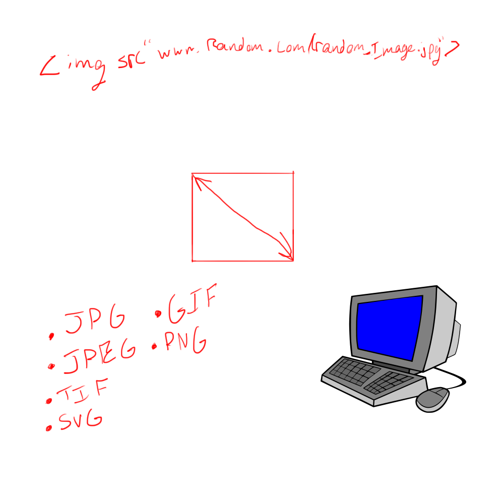

Web Development: Images - Formats, Differences, Responsive
by Jaegar Stank
 © Jaegar Stank
An Introduction to Web Development:
The World Wide Web, the world's first commercialized internet service, was a new space in which people could communicate. With this new space it brought with it new opportunities with web design and development.
History
With the introduction of images to the web in early 1991, the popularity and uses of the m as a digital tool are so far reaching that few websites do not use them. One of the first images put on the web was a Italian parody band by the name of Les Horribles Cernettes. The web has came much farther from this, having billions of images on the web, each with different aspect ratios and resolutions. These images all have a place, whether it be on a server or a local computer.
The focus on compression. Forms of compression were and still are one of the most important methods of preserving storage and increasing buffering speeds. The two forms of compression that are primarily used on the web are Lossy and Lossless Compression. They are able to reduce the size of the data required to transfer, thus the application of this can be beneficial for the sites that require imagery. The focus on compression. Forms of compression were and still are one of the most important methods of preserving storage and increasing buffering speeds. The two forms of compression that are primarily used on the web are Lossy and Lossless Compression.
Current Formats
Current formats for images on the web are: - JPG: perhaps the most common image format used on the web. - PNG: very common and versatile image format found on the web today. - GIF: a growing force on the web now. - TIF: is known as the highest quality image format, is best used for commercial print work and shouldn't be used on the web.
What Are Responsive Images?
Responsive Images are Images that are able to expand or contract with the size of the webpage, allowing for more complete mobile experiences. This allows users on all platforms to adjust sites to a manageable size with ease, as well as viewing easier. Methods to go about doing this are simply adjusting in the HTML description of the image itself.
Resources
- Responsive Images in Web Design
- History of Web Development(Website Coding and Etc.):
- Current Formats for Images